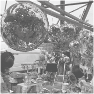
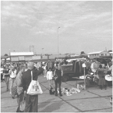
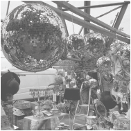
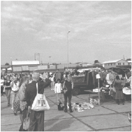
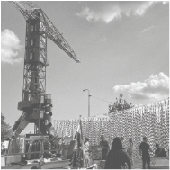

Opkomende data
27 en 28 januari
24 en 25 februari
16 en 17 maart
6 en 7 april
Dit is de plek om goedkope parels te vinden! van schoenen en hakken tot mooie jassen en jurken.

Opkomende data
27 en 28 januari
24 en 25 februari
16 en 17 maart
6 en 7 april
Dit is de plek om goedkope parels te vinden! van schoenen en hakken tot mooie jassen en jurken.
De ijhallen is de grootste vlooienmarkt van Europa, dat elke maand plaats vindt.
In de zomer is de ijhallen buiten en in de winter verplaatst het naar binnen in de loods.